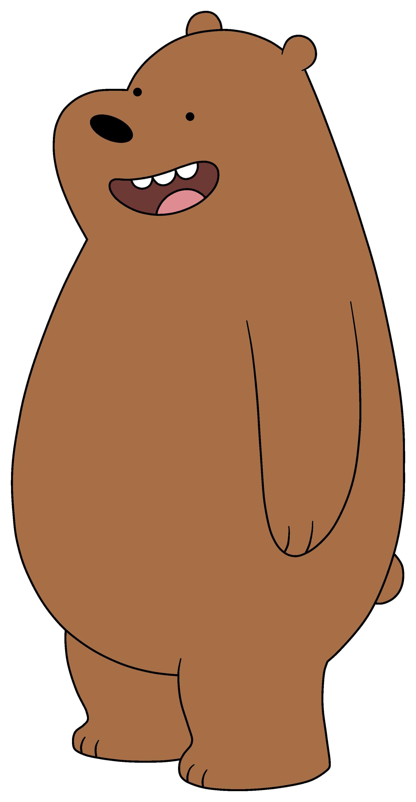

Grizzly
(biasanya dipanggil "Grizz") (diisi oleh Eric Edelstein, Sam Lavagnino sebagai anak beruang) adalah beruang grizzly. Pemimpin tertua dan de facto dari saudaranya, Grizz adalah makhluk yang sangat mencintai dan cenderung membuat orang lain menjadi pesta pora acak. Grizz secara paradoks sangat ramah namun tidak kompeten secara sosial. Meskipun demikian, dia terus-menerus ingin bertemu orang baru dan mencoba berteman dengan semua orang yang ditemuinya. Saat bayi, ia diselamatkan oleh tim pemadam kebakaran yang mencegahnya jatuh dari puncak pohon saat terjadi badai. Tampaknya dia lebih muda dari kebanyakan episode bayi beruang sesuai dengan gambar kilas balik di episode "Burrito." Disebutkan oleh Ice Bear bahwa Grizz menulis puisi dalam bahasa Inggris, sekaligus menjadi DJ dan beatboxer. Dia juga memiliki diri alternatif sebagai Crowbar Jones yang merupakan bintang dari serangkaian film aksi buatan rumah yang buruk.